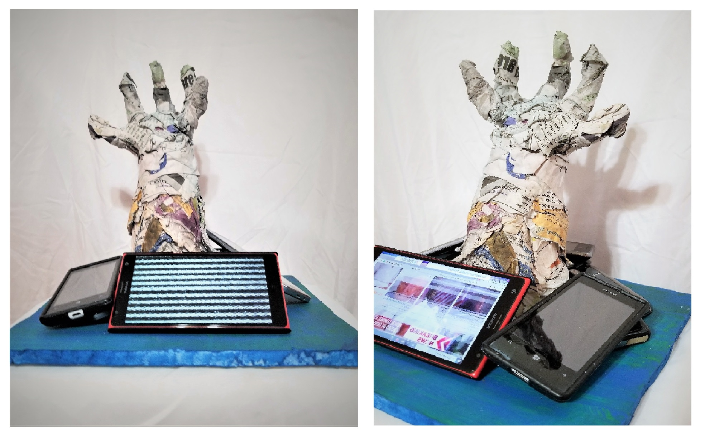
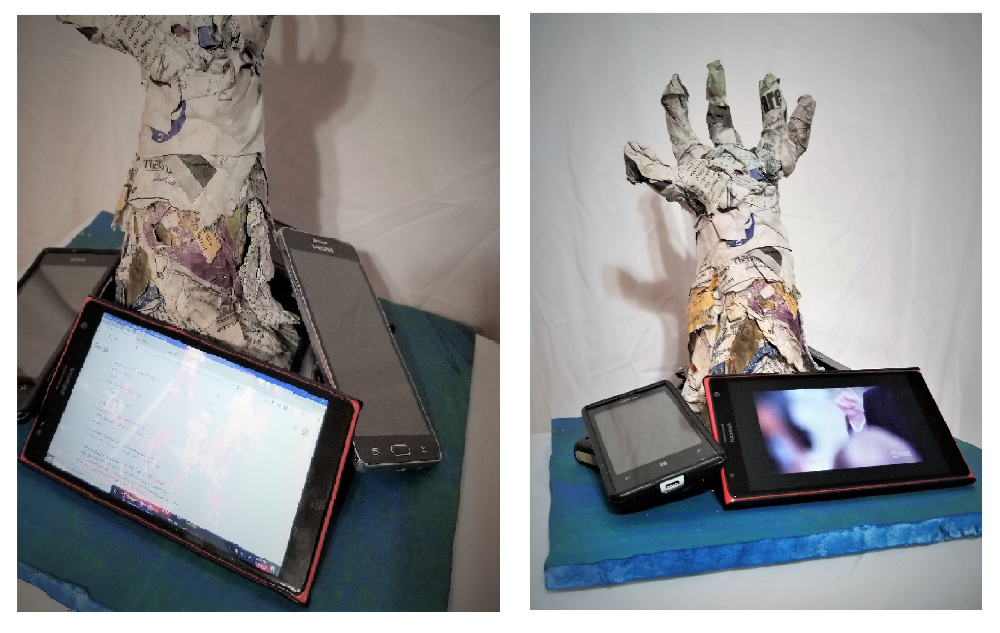

Drowning in Media
Date: 2019
Mediums: Found Footage, Personal Footage, Found Audio and Recorded Sounds
Description: In this piece, I wanted to explore how the new age of technology affects our society and minds. The devices that we use on the daily, most commonly smartphones, has given us access to unlimited knowledge. The world is easily accessible, information can be discovered in an instant. Having immediate access to information has become overwhelming to the public. With the continuous use of these devices, people are constantly bombarded with different types of information. This constant bombardment of information creates a sensory overload for users. As a result, our current society has become overwhelmed by our current media and technology.
"Mock-Up" Sculpture: I created a mock-up sculpture to help express these ideas of overstimulation. A 3-D hand sculpture drowning in media, which is symbolized by the phones surrounding it. Each phone would play the "Drowning in Media". I also thought it would be intresting to combine video art with 3D sculpture, combining a medium that I have more experience and with a newer medium. I do want to create a more well put sclupture in the future.
 